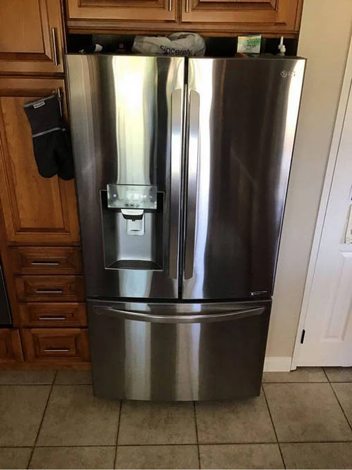

LG Refrigerator Has a Persistent Bad Smell That Does Not Disappear After Cleaning: Possible Drain System Issues, Water Stagnation, or Hidden Air Duct Contamination
A persistent unpleasant smell inside an LG refrigerator, especially one that remains even after thorough cleaning, usually indicates a deeper internal issue rather than surface contamination. In many cases, the odor is not caused by visible spoiled food but by hidden moisture accumulation, blocked drainage, or contamination inside the air circulation system. When these
One of the most common causes is a problem with the drainage system. In LG refrigerators, condensation from the cooling process is normally directed through a small drain hole into a evaporation tray located near the compressor. If this drain becomes partially or fully clogged with food particles, grease, or ice, water begins to accumulate inside hidden areas of the refrigerator. Over time, this stagnant water becomes a source of persistent odor that spreads throughout the appliance every time the cooling system circulates air.
Another frequent issue is water stagnation in the drain pan or internal channels. When the refrigerator operates normally, the water collected from defrost cycles should evaporate efficiently due to the heat generated by the compressor. If airflow around the compressor is restricted or the drainage path is blocked, water may remain in the tray for long periods. This creates a humid environment where bacteria can develop, leading to a strong smell that is often described as musty or sour.

Hidden contamination inside air circulation channels is another important factor. LG refrigerators rely on a system of air ducts that distribute cold air evenly between compartments. If moisture, food particles, or mold begin to accumulate inside these ducts, the smell can spread throughout the entire refrigerator even if the visible interior is clean. In such cases, wiping shelves and walls does not solve the problem because the contamination is located behind panels or inside sealed air pathways.
The evaporator area can also contribute to persistent odors. In models with a No Frost system, air passes through the evaporator before entering the refrigerator compartment. If dust, mold, or organic residue builds up around the evaporator or fan assembly, the circulating air can carry unpleasant odors into every section of the appliance. This is especially noticeable when the fan starts operating after a long idle period, as it pushes accumulated air through the system.
Improper food storage can also accelerate odor formation. Even small amounts of spilled liquids or forgotten products can seep into hidden corners, especially around drawers, door seals, or ventilation openings. Over time, these residues decompose and create odors that are difficult to eliminate without disassembling certain components. Plastic materials inside the refrigerator may also absorb odors, making them persist even after cleaning.
Another often overlooked factor is excessive humidity inside the appliance. Frequent door openings, warm food placed inside the refrigerator, or a damaged door gasket can introduce moisture into the system. High humidity promotes mold growth in hidden areas such as seals, drain channels, and ventilation ducts.
Once mold develops inside these zones, standard cleaning is usually not enough to fully eliminate the smell.Typical signs that the odor is caused by internal technical issues include a smell that returns shortly after cleaning, visible moisture under drawers, occasional water pooling at the bottom of the refrigerator, or uneven airflow between compartments. In some cases, the smell becomes stronger after the compressor turns on, which indicates that air circulation is spreading contamination from internal components.
Attempting to resolve the issue without proper inspection may only provide temporary improvement. Cleaning visible surfaces does not address blockages inside the drainage system or contamination within air ducts. In more severe cases, partial disassembly is required to properly clean the evaporator area, drain channels, and internal airflow pathways.
Preventive maintenance can significantly reduce the risk of odor formation. Regularly cleaning the drain opening, ensuring that food containers are sealed properly, and avoiding long-term storage of uncovered products helps minimize contamination. It is also important to periodically check the condition of the door gasket, since even small leaks allow warm air and moisture to enter the refrigerator, creating favorable conditions for bacterial growth.
If the unpleasant smell in your LG refrigerator does not disappear after cleaning, professional servicing is recommended. A qualified technician can inspect the drainage system, clean or flush blocked channels, check the evaporator and fan assembly, and remove hidden contamination from air circulation ducts. Proper maintenance not only eliminates the odor at its source but also restores hygienic conditions inside the appliance and helps prevent the problem from returning in the future.